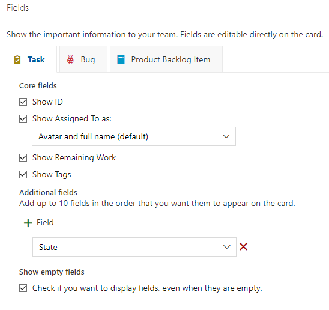

Azure DevOps'ta "Sprints" (İterasyonlar) özelliği altında "Cards" (Kartlar) ayarlarındaki "Fields" (Alanlar) seçeneği, sprint panosunda iş öğelerinin kartlarında görüntülenen alanları yapılandırmak için kullanılır.
Bu ayarlarla, iş öğelerinin kartlarında hangi alanların görüntüleneceğini belirleyebilirsiniz.
İşte bu ayarlar hakkında daha fazla bilgi:
Bu bölümde, iş öğeleri için kullanılabilir olan alanların bir listesini görürsünüz. Örneğin, iş öğesi adı, atanan kişi, tahmini süre, öncelik, durum gibi alanlar burada listelenir.
Bu bölümde, kartlarda görüntülenmesini istediğiniz alanları seçersiniz. Kullanılabilir alanlar listesinden istediğiniz alanları seçebilir ve "Add" (Ekle) düğmesine tıklayarak görüntülenen alanlar listesine ekleyebilirsiniz.
Bu bölümde, görüntülenen alanların sırasını belirleyebilirsiniz. Görüntülenen alanlar listesindeki alanları sürükleyip bırakarak sıralamayı değiştirebilirsiniz. En üstteki alan, kartta en üstte görüntülenecek olan alandır.
Bu bölümde, her bir alan için görüntüleme ayarlarını yapabilirsiniz. Örneğin, alanın başlık olarak mı görüntüleneceği, metin formatının nasıl olacağı veya alanın isteğe bağlı olarak görüntülenip görüntülenmeyeceği gibi ayarları buradan yapabilirsiniz.
